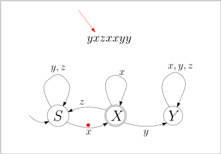
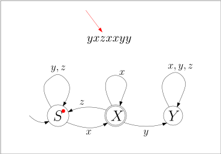
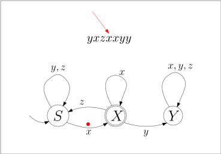
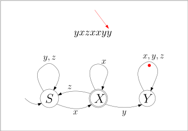

5.2 Endliche Automaten./wly/05/02-finite-state-machines.wly:2:5
Grammatiken erlauben es uns, gewisse Formate zu./wly/05/02-finite-state-machines.wly:4:5 beschreiben. Das reicht uns aber nicht: wir wollen./wly/05/02-finite-state-machines.wly:5:5 Daten ./wly/05/02-finite-state-machines.wly:6:5parsen./wly/05/02-finite-state-machines.wly:6:12,./wly/05/02-finite-state-machines.wly:6:19 im engen Sinne also eine grammatische./wly/05/02-finite-state-machines.wly:6:19 Ableitung rekonstruieren und allgemein die Struktur./wly/05/02-finite-state-machines.wly:7:5 eines gegebenen Wortes herausarbeiten. Ein./wly/05/02-finite-state-machines.wly:8:5 bescheideneres Ziel ist es, für ein gegebenes Wort zu./wly/05/02-finite-state-machines.wly:9:5 ./wly/05/02-finite-state-machines.wly:10:5entscheiden./wly/05/02-finite-state-machines.wly:10:6,./wly/05/02-finite-state-machines.wly:10:18 ob es sich überhaupt aus einer./wly/05/02-finite-state-machines.wly:10:18 Grammatik ableiten lässt. Für reguläre Grammatiken./wly/05/02-finite-state-machines.wly:11:5 gibt es hierfür die ./wly/05/02-finite-state-machines.wly:12:5endlichen Automaten./wly/05/02-finite-state-machines.wly:12:26../wly/05/02-finite-state-machines.wly:12:46 Sie können./wly/05/02-finite-state-machines.wly:12:46 endliche Automaten verstehen als ein eingeschränktes./wly/05/02-finite-state-machines.wly:13:5 Modell eines Rechners; oder als Blaupause für einen./wly/05/02-finite-state-machines.wly:14:5 effizienten Algorithmus, um reguläre Grammatiken zu./wly/05/02-finite-state-machines.wly:15:5 parsen. Hier sehen Sie ein Beispiel für einen./wly/05/02-finite-state-machines.wly:16:5 endlichen Automaten über dem Alphabet./wly/05/02-finite-state-machines.wly:17:5 ./wly/05/02-finite-state-machines.wly:18:5$\Sigma = \{x,y,z\}$../wly/05/02-finite-state-machines.wly:18:25 Die Idee ist, dass der Automat./wly/05/02-finite-state-machines.wly:18:25 ein Wort ./wly/05/02-finite-state-machines.wly:19:5$\alpha$ Zeichen für Zeichen einliest. Die./wly/05/02-finite-state-machines.wly:19:22 Pfeile zwischen den Kreisen (den ./wly/05/02-finite-state-machines.wly:20:5Zuständen./wly/05/02-finite-state-machines.wly:20:39 des./wly/05/02-finite-state-machines.wly:20:49 Automaten) zeigen an, in welchen neuen Zustand beim./wly/05/02-finite-state-machines.wly:21:5 Lesen eines Zeichen gewechselt werden muss. Der Pfeil./wly/05/02-finite-state-machines.wly:22:5 "aus dem Nichts", hier der von links nach ./wly/05/02-finite-state-machines.wly:23:5$S$,./wly/05/02-finite-state-machines.wly:23:51 zeigt./wly/05/02-finite-state-machines.wly:23:51 den ./wly/05/02-finite-state-machines.wly:24:5Startzustand./wly/05/02-finite-state-machines.wly:24:10 an, in welchem der Automat beginnt../wly/05/02-finite-state-machines.wly:24:23
Um zu zeigen, wie der Automat ein Eingabewort./wly/05/02-finite-state-machines.wly:31:5 verarbeitet, nehmen wir das Beispiel./wly/05/02-finite-state-machines.wly:32:5 ./wly/05/02-finite-state-machines.wly:33:5$\alpha = yxzxxyy$../wly/05/02-finite-state-machines.wly:33:23
 ./public/img/finite-state-automata/fsa-example-01-01.svg
./public/img/finite-state-automata/fsa-example-01-01.svg
 ./public/img/finite-state-automata/fsa-example-01-02.svg
./public/img/finite-state-automata/fsa-example-01-02.svg
 ./public/img/finite-state-automata/fsa-example-01-03.svg
./public/img/finite-state-automata/fsa-example-01-03.svg
 ./public/img/finite-state-automata/fsa-example-01-04.svg
./public/img/finite-state-automata/fsa-example-01-04.svg
./public/img/finite-state-automata/fsa-example-01-05.svg
 ./public/img/finite-state-automata/fsa-example-01-06.svg
./public/img/finite-state-automata/fsa-example-01-06.svg
./public/img/finite-state-automata/fsa-example-01-07.svg
 ./public/img/finite-state-automata/fsa-example-01-08.svg
./public/img/finite-state-automata/fsa-example-01-08.svg
./public/img/finite-state-automata/fsa-example-01-09.svg
./public/img/finite-state-automata/fsa-example-01-10.svg
 ./public/img/finite-state-automata/fsa-example-01-11.svg
./public/img/finite-state-automata/fsa-example-01-11.svg
 ./public/img/finite-state-automata/fsa-example-01-12.svg
./public/img/finite-state-automata/fsa-example-01-12.svg
./public/img/finite-state-automata/fsa-example-01-13.svg
 ./public/img/finite-state-automata/fsa-example-01-14.svg
./public/img/finite-state-automata/fsa-example-01-14.svg
./public/img/finite-state-automata/fsa-example-01-15.svg
 ./public/img/finite-state-automata/fsa-example-01-16.svg
./public/img/finite-state-automata/fsa-example-01-16.svg
 ./public/img/finite-state-automata/fsa-example-01-17.svg
./public/img/finite-state-automata/fsa-example-01-17.svg
 ./public/img/finite-state-automata/fsa-example-01-18.svg
./public/img/finite-state-automata/fsa-example-01-18.svg
 ./public/img/finite-state-automata/fsa-example-01-19.svg
./public/img/finite-state-automata/fsa-example-01-19.svg
 ./public/img/finite-state-automata/fsa-example-01-20.svg
./public/img/finite-state-automata/fsa-example-01-20.svg
 ./public/img/finite-state-automata/fsa-example-01-21.svg
./public/img/finite-state-automata/fsa-example-01-21.svg
 ./public/img/finite-state-automata/fsa-example-01-22.svg
./public/img/finite-state-automata/fsa-example-01-22.svg
 ./public/img/finite-state-automata/fsa-example-01-23.svg
./public/img/finite-state-automata/fsa-example-01-23.svg
./public/img/finite-state-automata/fsa-example-01-24.svg
 ./public/img/finite-state-automata/fsa-example-01-25.svg
./public/img/finite-state-automata/fsa-example-01-25.svg
In diesem Beispiel endet der Automat im Zustand ./wly/05/02-finite-state-machines.wly:62:5$Y$../wly/05/02-finite-state-machines.wly:62:56 ./wly/05/02-finite-state-machines.wly:62:56 Sie sehen, dass der Zustand ./wly/05/02-finite-state-machines.wly:63:5$X$ mit einem doppelten./wly/05/02-finite-state-machines.wly:63:36 Rand markiert ist: dies symbolisiert, dass ./wly/05/02-finite-state-machines.wly:64:5$X$ ein./wly/05/02-finite-state-machines.wly:64:51 ./wly/05/02-finite-state-machines.wly:65:5akzeptierender./wly/05/02-finite-state-machines.wly:65:6 Endzustand ist. Wenn der Automat ein./wly/05/02-finite-state-machines.wly:65:21 Wort ./wly/05/02-finite-state-machines.wly:66:5$\alpha$ abgearbeitet hat, ./wly/05/02-finite-state-machines.wly:66:18akzeptiert./wly/05/02-finite-state-machines.wly:66:38 er es,./wly/05/02-finite-state-machines.wly:66:49 wenn er in einem akzeptierenden Endzustand gelandet./wly/05/02-finite-state-machines.wly:67:5 ist; ansonsten ./wly/05/02-finite-state-machines.wly:68:5lehnt er es ab./wly/05/02-finite-state-machines.wly:68:21../wly/05/02-finite-state-machines.wly:68:36 In unserem Beispiel./wly/05/02-finite-state-machines.wly:68:36 sehen wir also, dass der Automat das Eingabewort./wly/05/02-finite-state-machines.wly:69:5 ./wly/05/02-finite-state-machines.wly:70:5$yxzxxyy$ ablehnt../wly/05/02-finite-state-machines.wly:70:14
Definition 5.2.1 (Endlicher Automat, Finite State Machine)../wly/05/02-finite-state-machines.wly:72:6 Ein./wly/05/02-finite-state-machines.wly:74:53 endlicher Automat besteht aus einem endlichen./wly/05/02-finite-state-machines.wly:75:9 Eingabealphaet ./wly/05/02-finite-state-machines.wly:76:9$\Sigma$,./wly/05/02-finite-state-machines.wly:76:32 einer endlichen Menge ./wly/05/02-finite-state-machines.wly:76:32$Q$ ./wly/05/02-finite-state-machines.wly:76:59 von Zuständen, einem Startzustand ./wly/05/02-finite-state-machines.wly:77:9$\qstart \in Q$ ,./wly/05/02-finite-state-machines.wly:77:58 einer Menge ./wly/05/02-finite-state-machines.wly:78:9$F \subseteq Q$ von akzeptierenden./wly/05/02-finite-state-machines.wly:78:36 Endzuständen und einer Zustandsübergangsfunktion./wly/05/02-finite-state-machines.wly:79:9
$$
\begin{align*}
\delta : Q \times \Sigma \rightarrow Q \ .
\end{align*}
$$
Formal gesehen ist also ein Automat ein Quintupel./wly/05/02-finite-state-machines.wly:85:9 ./wly/05/02-finite-state-machines.wly:86:9$M = (\Sigma, Q, \qstart, F, \delta)$../wly/05/02-finite-state-machines.wly:86:46
Die Idee ist, dass der Automat im Zustand ./wly/05/02-finite-state-machines.wly:88:5$\qstart$ ./wly/05/02-finite-state-machines.wly:88:56 startet und nun in jedem Schritt ein weiteres Zeichen./wly/05/02-finite-state-machines.wly:89:5 des Eingabewortes liest. Wenn er im Zustand ./wly/05/02-finite-state-machines.wly:90:5$q$ ist./wly/05/02-finite-state-machines.wly:90:52 und das Zeichen ./wly/05/02-finite-state-machines.wly:91:5$x$ liest, so wechselt er in den./wly/05/02-finite-state-machines.wly:91:24 Zustand ./wly/05/02-finite-state-machines.wly:92:5$\delta(q,x)$../wly/05/02-finite-state-machines.wly:92:26 Statt ./wly/05/02-finite-state-machines.wly:92:26$\delta(q,x) = q'$ ./wly/05/02-finite-state-machines.wly:92:52 verwenden wir die leichter zu lesende Schreibweise./wly/05/02-finite-state-machines.wly:93:5
$$
q \stackrel{x}{\rightarrow} q' \ .
$$
Wenn das Wort zu Ende ist, dann ./wly/05/02-finite-state-machines.wly:99:5akzeptiert./wly/05/02-finite-state-machines.wly:99:38 der./wly/05/02-finite-state-machines.wly:99:49 Automat, wenn er in einem akzeptierenden Zustand./wly/05/02-finite-state-machines.wly:100:5 angekommen ist, also in ./wly/05/02-finite-state-machines.wly:101:5$F$../wly/05/02-finite-state-machines.wly:101:32
Beispiel 5.2.2./wly/05/02-finite-state-machines.wly:103:6 ./wly/05/02-finite-state-machines.wly:103:23 Betrachten wir den endlichen Automaten./wly/05/02-finite-state-machines.wly:104:9
und stellen ihn gemäß ./wly/05/02-finite-state-machines.wly:111:9Definition 5.2.1./wly/ als Quintupel./wly/05/02-finite-state-machines.wly:112:9 ./wly/05/02-finite-state-machines.wly:113:9$M = (\Sigma, Q, \qstart, F, \delta)$ dar mit./wly/05/02-finite-state-machines.wly:113:46
$$
\begin{align*}
\Sigma&= \{x,y,z\} \\
Q&= \{S, X, Y\} \\
\qstart&= S \\
F&= \{X\} \ .
\end{align*}
$$
Um noch die Zustandsübergangsfunktion ./wly/05/02-finite-state-machines.wly:122:9$\delta$ ./wly/05/02-finite-state-machines.wly:122:55 darzustellen, müssen wir uns überlegen, wie wir./wly/05/02-finite-state-machines.wly:123:9 Funktionen überhaupt darstellen. Da ./wly/05/02-finite-state-machines.wly:124:9$\delta$ eine./wly/05/02-finite-state-machines.wly:124:53 endliche Funktion ist, können wir einfach alle./wly/05/02-finite-state-machines.wly:125:9 Eingabewert-Ausgabewert-Paare hinschreiben, am Besten./wly/05/02-finite-state-machines.wly:126:9 in einer Tabelle, so wie wir es bereits bei Booleschen./wly/05/02-finite-state-machines.wly:127:9 Funktionen mit Wahrheitstabellen getan haben. ./wly/05/02-finite-state-machines.wly:128:9$\delta$ ./wly/05/02-finite-state-machines.wly:128:63 ist also./wly/05/02-finite-state-machines.wly:129:9
$$
\begin{align*}
\begin{array}{cc|c}
q&\sigma&\delta(q,x) \\ \hline
S&x&X \\
S&y&S \\
S&z&S \\
X&x&X \\
X&y&Y \\
X&z&S \\
Y&x&Y \\
Y&y&Y \\
Y&z&Y
\end{array}
\end{align*}
$$
Da die Funktion ./wly/05/02-finite-state-machines.wly:146:9$\delta$ bei jedem endlichen./wly/05/02-finite-state-machines.wly:146:33 Automaten genau zwei Eingabeparameter hat, können wir./wly/05/02-finite-state-machines.wly:147:9 es eventuell übersichtlicher als zweidimensionale./wly/05/02-finite-state-machines.wly:148:9 Tabelle darstellen:./wly/05/02-finite-state-machines.wly:149:9
$$
\begin{align*}
\begin{array}{c|c|c|c}
&x&y&z \\ \hline
S&X&S&S \\ \hline
X&X&Y&S \\ \hline
Y&Y&Y&Y
\end{array}
\end{align*}
$$
Diese zwei Tabellen dienen in diesem Beispiel aber./wly/05/02-finite-state-machines.wly:160:9 nur dazu, noch einmal zu illustrieren, was ich damit./wly/05/02-finite-state-machines.wly:161:9 meine, wenn ich sage, dass ./wly/05/02-finite-state-machines.wly:162:9$\delta$ eine Funktion von./wly/05/02-finite-state-machines.wly:162:44 ./wly/05/02-finite-state-machines.wly:163:9$Q \times \Sigma$ nach ./wly/05/02-finite-state-machines.wly:163:26$Q$ ist. Wenn Sie selbst an./wly/05/02-finite-state-machines.wly:163:35 endlichen Automaten rumbasteln, empfehle ich Ihnen,./wly/05/02-finite-state-machines.wly:164:9 die Funktion ./wly/05/02-finite-state-machines.wly:165:9$\delta$ graphisch mit Kreisen und./wly/05/02-finite-state-machines.wly:165:30 Pfeilen darzustellen, so wie wir es oben getan haben:./wly/05/02-finite-state-machines.wly:166:9
Das ist eine völlig legitime Notation für eine./wly/05/02-finite-state-machines.wly:173:9 Funktion ./wly/05/02-finite-state-machines.wly:174:9$\delta: Q \times \Sigma \rightarrow Q$ und./wly/05/02-finite-state-machines.wly:174:57 genau so formal wie die Tabellenschreibweise../wly/05/02-finite-state-machines.wly:175:9
Definition 5.2.3 (Erweiterte Zuständsübergangsfunktion)./wly/05/02-finite-state-machines.wly:177:6../wly/05/02-finite-state-machines.wly:178:49 Für einen./wly/05/02-finite-state-machines.wly:178:49 endlichen Automaten ./wly/05/02-finite-state-machines.wly:179:9$(\Sigma, Q, \qstart, F, \delta)$ ./wly/05/02-finite-state-machines.wly:179:62 definieren wir die ./wly/05/02-finite-state-machines.wly:180:9erweiterte./wly/05/02-finite-state-machines.wly:180:29 Zustandsübergangsfunktion./wly/05/02-finite-state-machines.wly:181:9 ./wly/05/02-finite-state-machines.wly:181:35 ./wly/05/02-finite-state-machines.wly:182:9$\hat{\delta}: Q \times \Sigma^* \rightarrow Q$ ./wly/05/02-finite-state-machines.wly:182:56 rekursiv wie folgt:./wly/05/02-finite-state-machines.wly:183:9
$$
\begin{align*}
\hat{\delta} (q, \epsilon)&= q \\
\hat{\delta} (q, x\alpha)&= \hat{\delta} (\delta(x), \alpha) \ .
\end{align*}
$$
$\hat{\delta} (q, \alpha) = q'$ heißt also, dass der./wly/05/02-finite-state-machines.wly:190:40 Automat, wenn er sich im Zustand ./wly/05/02-finite-state-machines.wly:191:9$q$ befindet und das./wly/05/02-finite-state-machines.wly:191:45 Wort ./wly/05/02-finite-state-machines.wly:192:9$\alpha$ abarbeitet, er danach im Zustand ./wly/05/02-finite-state-machines.wly:192:22$q'$ ./wly/05/02-finite-state-machines.wly:192:60 landet. Wir schreiben auch kompakt./wly/05/02-finite-state-machines.wly:193:9
$$
q \stackrel{\alpha}{\rightarrow} q' \ .
$$
Definition 5.2.4 (Akzeptierte Sprache)../wly/05/02-finite-state-machines.wly:199:6 Sei./wly/05/02-finite-state-machines.wly:200:33 ./wly/05/02-finite-state-machines.wly:201:9$M = (\Sigma, Q, \qstart, F, \delta)$ ein endlicher./wly/05/02-finite-state-machines.wly:201:46 Automat. Die von ./wly/05/02-finite-state-machines.wly:202:9$M$ akzeptierte Sprache ist./wly/05/02-finite-state-machines.wly:202:29
$$
\begin{align*}
L(M) := \{ \alpha \in \Sigma \ | \ \hat{\delta}(\qstart, \alpha) \in F \} \ .
\end{align*}
$$
Beispiel 5.2.5./wly/05/02-finite-state-machines.wly:208:6 ./wly/05/02-finite-state-machines.wly:208:23 Der endliche Automat, den wir oben bereits eingeführt./wly/05/02-finite-state-machines.wly:209:9 haben:./wly/05/02-finite-state-machines.wly:210:9
akzeptiert die Sprache aller ./wly/05/02-finite-state-machines.wly:217:9$\alpha \in \{x,y,z\}$,./wly/05/02-finite-state-machines.wly:217:60 ./wly/05/02-finite-state-machines.wly:217:60 die auf ./wly/05/02-finite-state-machines.wly:218:9$x$ enden und nicht die Buchstabenfolge ./wly/05/02-finite-state-machines.wly:218:20$xy$ ./wly/05/02-finite-state-machines.wly:218:61 enthalten../wly/05/02-finite-state-machines.wly:219:9
Übungsaufgabe 5.2.1./wly/05/02-finite-state-machines.wly:221:6 ./wly/05/02-finite-state-machines.wly:221:26 Ändern Sie den Automaten aus dem letzten Beispiel so./wly/05/02-finite-state-machines.wly:222:9 ab, dass die Bedingung ./wly/05/02-finite-state-machines.wly:223:9"die auf ./wly/05/02-finite-state-machines.wly:223:33$x$ enden"./wly/05/02-finite-state-machines.wly:223:45 ./wly/05/02-finite-state-machines.wly:223:53 entfällt, er also alle Wörter akzeptiert, die die./wly/05/02-finite-state-machines.wly:224:9 Folge ./wly/05/02-finite-state-machines.wly:225:9$xy$ nicht enthalten../wly/05/02-finite-state-machines.wly:225:19
Übungsaufgabe 5.2.2./wly/05/02-finite-state-machines.wly:227:6 ./wly/05/02-finite-state-machines.wly:227:26 Zeichnen Sie einen Automaten für die Sprache aller./wly/05/02-finite-state-machines.wly:228:9 Wörter über ./wly/05/02-finite-state-machines.wly:229:9$\{a,b,c,d\}$,./wly/05/02-finite-state-machines.wly:229:34 die die Folge ./wly/05/02-finite-state-machines.wly:229:34$a,b,c,d$ ./wly/05/02-finite-state-machines.wly:229:59 enthalten../wly/05/02-finite-state-machines.wly:230:9
Übungsaufgabe 5.2.3./wly/05/02-finite-state-machines.wly:232:6 ./wly/05/02-finite-state-machines.wly:232:26 Zeichnen Sie einen Automaten für die Sprache aller./wly/05/02-finite-state-machines.wly:233:9 Wörter über ./wly/05/02-finite-state-machines.wly:234:9$\{a,b,c,d\}$,./wly/05/02-finite-state-machines.wly:234:34 die genau vier ./wly/05/02-finite-state-machines.wly:234:34$a$ ./wly/05/02-finite-state-machines.wly:234:54 enthalten../wly/05/02-finite-state-machines.wly:235:9
Endliche Automaten zu regulären Grammatiken./wly/05/02-finite-state-machines.wly:238:9
Wenn wir einen endlichen Automaten gegeben haben,./wly/05/02-finite-state-machines.wly:240:5 dann können wir leicht eine entsprechende reguläre./wly/05/02-finite-state-machines.wly:241:5 Grammatik dazu bauen, indem wir alle Pfeile einfach in./wly/05/02-finite-state-machines.wly:242:5 Produktionen übersetzen. Für den Automaten./wly/05/02-finite-state-machines.wly:243:5
würde dies beispielsweise die folgenden Produktionen./wly/05/02-finite-state-machines.wly:250:5 ergeben:./wly/05/02-finite-state-machines.wly:251:5
$$
\begin{align*}
S&\rightarrow y S \ | \ zS \ | \ x X \\
X&\rightarrow x X \ | \ z S \ | \ y Y \\
Y&\rightarrow x Y \ | \ y Y \ | \ z Y \\
\end{align*}
$$
und, weil ./wly/05/02-finite-state-machines.wly:259:5$X$ ein akzeptierender Zustand ist,./wly/05/02-finite-state-machines.wly:259:18
$$
\begin{align*}
X&\rightarrow \epsilon
\end{align*}
$$
Dies geht ganz allgemein:./wly/05/02-finite-state-machines.wly:265:5
Theorem 5.2.6./wly/05/02-finite-state-machines.wly:267:6 ./wly/05/02-finite-state-machines.wly:267:22 Sei ./wly/05/02-finite-state-machines.wly:269:9$M = (\Sigma, Q, \qstart, F, \delta)$ ein./wly/05/02-finite-state-machines.wly:269:50 endlicher Automat. Dann gibt es eine reguläre./wly/05/02-finite-state-machines.wly:270:9 Grammatik ./wly/05/02-finite-state-machines.wly:271:9$G = (\Sigma, N, P, S)$ mit ./wly/05/02-finite-state-machines.wly:271:42$L(G) = L(M)$../wly/05/02-finite-state-machines.wly:271:60
Wir nehmen dies als Anlass, um mal wieder einen./wly/05/02-finite-state-machines.wly:273:5 Induktionsbeweis im Detail durchzuführen../wly/05/02-finite-state-machines.wly:274:5
Beweis../wly/ ./wly/ Wir setzen ./wly/05/02-finite-state-machines.wly:277:9$N = Q$ und ./wly/05/02-finite-state-machines.wly:277:27$S = \qstart$ und führen für./wly/05/02-finite-state-machines.wly:277:45 jeden Zustandsübergang, der von ./wly/05/02-finite-state-machines.wly:278:9$\delta$ beschrieben./wly/05/02-finite-state-machines.wly:278:49 wird, eine Ableitungsregel ein:./wly/05/02-finite-state-machines.wly:279:9
$$
\begin{align*}
q_1 \stackrel{x}{\rightarrow} q_2&\quad \textnormal{ wird zur Produktion } \quad
q_1 \rightarrow xq_2
\end{align*}
$$
Hiermit erhalten wir eine "Zwischengrammatik" ./wly/05/02-finite-state-machines.wly:286:9$G'$ ../wly/05/02-finite-state-machines.wly:286:59 Die endgültige Grammatik ./wly/05/02-finite-state-machines.wly:287:9$G$ erhalten wir, indem wir./wly/05/02-finite-state-machines.wly:287:37 für jeden akzeptierenden Zustand ./wly/05/02-finite-state-machines.wly:288:9$q \in N$ die./wly/05/02-finite-state-machines.wly:288:51 Produktion./wly/05/02-finite-state-machines.wly:289:9
$$
\begin{align*}
q \rightarrow \epsilon
\end{align*}
$$
einführen. Wir zeigen nun per Induktion:./wly/05/02-finite-state-machines.wly:295:9
Behauptung 5.2.7./wly/05/02-finite-state-machines.wly:297:10 ./wly/05/02-finite-state-machines.wly:297:29 Sei ./wly/05/02-finite-state-machines.wly:298:13$\alpha \in \Sigma^*$ und ./wly/05/02-finite-state-machines.wly:298:38$q, q' \in Q$../wly/05/02-finite-state-machines.wly:298:56 Dann./wly/05/02-finite-state-machines.wly:298:56 gilt ./wly/05/02-finite-state-machines.wly:299:13$q \stackrel{\alpha}{\rightarrow} q'$ genau./wly/05/02-finite-state-machines.wly:299:55 dann, wenn ./wly/05/02-finite-state-machines.wly:300:13$q \Rightarrow^* \alpha q'$ in Grammatik./wly/05/02-finite-state-machines.wly:300:51 ./wly/05/02-finite-state-machines.wly:301:13$G'$ gilt../wly/05/02-finite-state-machines.wly:301:17
Bevor wir diese Behauptung beweisen, achten Sie auf./wly/05/02-finite-state-machines.wly:303:9 die Bedeutung der Symbole. Der einfache Pfeil in./wly/05/02-finite-state-machines.wly:304:9 ./wly/05/02-finite-state-machines.wly:305:9$q \stackrel{\alpha}{\rightarrow} q'$ beschreibt die./wly/05/02-finite-state-machines.wly:305:46 Arbeitsweise des endlichen Automaten, dass nämlich das./wly/05/02-finite-state-machines.wly:306:9 Verarbeiten von ./wly/05/02-finite-state-machines.wly:307:9$\alpha$ den Automaten vom Zustand ./wly/05/02-finite-state-machines.wly:307:33$q$ ./wly/05/02-finite-state-machines.wly:307:63 in den Zustand ./wly/05/02-finite-state-machines.wly:308:9$q'$ führt. Der doppelte Pfeil in./wly/05/02-finite-state-machines.wly:308:28 ./wly/05/02-finite-state-machines.wly:309:9$q \Rightarrow^* \alpha q'$ sagt aus, dass aus dem./wly/05/02-finite-state-machines.wly:309:36 Nichtterminalsymbol ./wly/05/02-finite-state-machines.wly:310:9$q$ in der Grammatik ./wly/05/02-finite-state-machines.wly:310:32$G$ in./wly/05/02-finite-state-machines.wly:310:53 möglicherweise mehreren Schritten die Wortform./wly/05/02-finite-state-machines.wly:311:9 ./wly/05/02-finite-state-machines.wly:312:9$\alpha q'$ abgeleitet werden kann. Der Pfeil./wly/05/02-finite-state-machines.wly:312:20 ./wly/05/02-finite-state-machines.wly:313:9$\rightarrow$ "lebt" also im Automaten ./wly/05/02-finite-state-machines.wly:313:22$M$,./wly/05/02-finite-state-machines.wly:313:51 der Pfeil./wly/05/02-finite-state-machines.wly:313:51 ./wly/05/02-finite-state-machines.wly:314:9$\Rightarrow^*$ lebt in der Grammatik ./wly/05/02-finite-state-machines.wly:314:24$G'$../wly/05/02-finite-state-machines.wly:314:51
Beweis../wly/ ./wly/ Wir verwenden Induktion über die Länge des Wortes./wly/05/02-finite-state-machines.wly:317:13 ./wly/05/02-finite-state-machines.wly:318:13$\alpha$ ../wly/05/02-finite-state-machines.wly:318:21
Induktionsbasis../wly/05/02-finite-state-machines.wly:320:14 Wenn ./wly/05/02-finite-state-machines.wly:320:31$\alpha = \epsilon$ gilt,./wly/05/02-finite-state-machines.wly:320:56 also ./wly/05/02-finite-state-machines.wly:321:13$\alpha$ die Länge 0 hat, dann gilt./wly/05/02-finite-state-machines.wly:321:26 ./wly/05/02-finite-state-machines.wly:322:13$q \stackrel{\epsilon}{\rightarrow} q'$ genau dann,./wly/05/02-finite-state-machines.wly:322:52 wenn ./wly/05/02-finite-state-machines.wly:323:13$q = q'$ ist. Wie kann nun./wly/05/02-finite-state-machines.wly:323:26 ./wly/05/02-finite-state-machines.wly:324:13$q \Rightarrow^* \epsilon q'$ in ./wly/05/02-finite-state-machines.wly:324:42$G'$ gelten?./wly/05/02-finite-state-machines.wly:324:50 Beachten Sie, dass jede Produktion in ./wly/05/02-finite-state-machines.wly:325:13$G'$ ein./wly/05/02-finite-state-machines.wly:325:55 Terminalsymbol erzeugt; ./wly/05/02-finite-state-machines.wly:326:13$q \Rightarrow^* \epsilon q'$ ./wly/05/02-finite-state-machines.wly:326:66 kann also nur gelten, wenn ./wly/05/02-finite-state-machines.wly:327:13keine./wly/05/02-finite-state-machines.wly:327:41 Produktion erfolgt./wly/05/02-finite-state-machines.wly:327:47 ist und somit ./wly/05/02-finite-state-machines.wly:328:13$q = q'$ gilt. Wir sehen: beide./wly/05/02-finite-state-machines.wly:328:35 Aussagen sind äquivalent zu ./wly/05/02-finite-state-machines.wly:329:13$q = q'$ und somit auch./wly/05/02-finite-state-machines.wly:329:49 äquivalent zueinander../wly/05/02-finite-state-machines.wly:330:13
Induktionsschritt./wly/05/02-finite-state-machines.wly:332:14../wly/05/02-finite-state-machines.wly:332:32 Wenn ./wly/05/02-finite-state-machines.wly:332:32$\alpha$ die Länge ./wly/05/02-finite-state-machines.wly:332:47$n+1$ ./wly/05/02-finite-state-machines.wly:332:63 hat, so schreiben wir ./wly/05/02-finite-state-machines.wly:333:13$\alpha = x \beta$ für ein Wort./wly/05/02-finite-state-machines.wly:333:53 ./wly/05/02-finite-state-machines.wly:334:13$\beta \in \Sigma^*$ der Länge ./wly/05/02-finite-state-machines.wly:334:33$n$../wly/05/02-finite-state-machines.wly:334:47 Per./wly/05/02-finite-state-machines.wly:334:47 Induktionshypothese können wir nun davon ausgehen,./wly/05/02-finite-state-machines.wly:335:13 dass für alle ./wly/05/02-finite-state-machines.wly:336:13$q_1, q_2 \in Q$ die Aussage./wly/05/02-finite-state-machines.wly:336:43 ./wly/05/02-finite-state-machines.wly:337:13$q_1 \stackrel{\beta}{\rightarrow} q_2$ genau dann./wly/05/02-finite-state-machines.wly:337:52 gilt, wenn ./wly/05/02-finite-state-machines.wly:338:13$q_1 \Rightarrow^* \beta q_2$ gilt. Unser./wly/05/02-finite-state-machines.wly:338:53 Ziel ist es, zu zeigen, dass die beiden folgenden./wly/05/02-finite-state-machines.wly:339:13 Aussagen äquivalent sind:./wly/05/02-finite-state-machines.wly:340:13
-
$q \stackrel{x \beta}{\rightarrow} q'$ im endlichen./wly/05/02-finite-state-machines.wly:344:59 Automaten ./wly/05/02-finite-state-machines.wly:345:21$M$,./wly/05/02-finite-state-machines.wly:345:34
-
$q \Rightarrow^* x \beta q'$ in der Grammatik ./wly/05/02-finite-state-machines.wly:348:49$G'$ ../wly/05/02-finite-state-machines.wly:348:71
Wir müssen beide Richtungen zeigen, also zeigen, dass./wly/05/02-finite-state-machines.wly:350:13 aus Aussage (1) die Aussage (2) folgt und umgekehrt../wly/05/02-finite-state-machines.wly:351:13
Aus (1) folgt (2)../wly/05/02-finite-state-machines.wly:353:14 Nehmen wir also an, dass./wly/05/02-finite-state-machines.wly:353:33 ./wly/05/02-finite-state-machines.wly:354:13$q \stackrel{x \beta}{\rightarrow} q'$ gilt und./wly/05/02-finite-state-machines.wly:354:51 bezeichnen ./wly/05/02-finite-state-machines.wly:355:13$q_1 := \delta(q,x)$../wly/05/02-finite-state-machines.wly:355:44 Es gilt also./wly/05/02-finite-state-machines.wly:355:44
$$
q \stackrel{x}{\rightarrow} q_1 \stackrel{\beta}{\rightarrow} q'
$$
Der erste Teil, also./wly/05/02-finite-state-machines.wly:361:13 ./wly/05/02-finite-state-machines.wly:362:13$q \stackrel{x}{\rightarrow} q_1$,./wly/05/02-finite-state-machines.wly:362:46 bedeutet, dass wir./wly/05/02-finite-state-machines.wly:362:46 in ./wly/05/02-finite-state-machines.wly:363:13$G'$ die Produktion ./wly/05/02-finite-state-machines.wly:363:20$q \rightarrow xq_1$ ./wly/05/02-finite-state-machines.wly:363:56 eingeführt haben. Auf den zweiten Teil, also./wly/05/02-finite-state-machines.wly:364:13 ./wly/05/02-finite-state-machines.wly:365:13$q_1 \stackrel{\beta}{\rightarrow} q'$,./wly/05/02-finite-state-machines.wly:365:51 können wir./wly/05/02-finite-state-machines.wly:365:51 die Induktionshypothese anwenden und schließen, dass./wly/05/02-finite-state-machines.wly:366:13 ./wly/05/02-finite-state-machines.wly:367:13$q_1 \Rightarrow^* \beta q'$ gilt. Nun können wir mit./wly/05/02-finite-state-machines.wly:367:41 dem Nichtterminal ./wly/05/02-finite-state-machines.wly:368:13$q$ beginnen, die Produktion./wly/05/02-finite-state-machines.wly:368:34 ./wly/05/02-finite-state-machines.wly:369:13$q \rightarrow x q_1$ anwenden und dann mit ./wly/05/02-finite-state-machines.wly:369:34$q_1$ ./wly/05/02-finite-state-machines.wly:369:62 fortfahrend die Wortform ./wly/05/02-finite-state-machines.wly:370:13$\beta q'$ ableiten, also./wly/05/02-finite-state-machines.wly:370:48
$$
q \Rightarrow x q_1 \Rightarrow^* x \beta q' \ .
$$
Dies zeigt die erste Richtung../wly/05/02-finite-state-machines.wly:376:13
Aus (2) folgt (1)../wly/05/02-finite-state-machines.wly:378:14 Nun nehmen wir an, dass./wly/05/02-finite-state-machines.wly:378:33 ./wly/05/02-finite-state-machines.wly:379:13$q \Rightarrow^* x \beta q'$ gilt. Untersuchen wir./wly/05/02-finite-state-machines.wly:379:41 die erste Produktion, die in dieser Ableitung./wly/05/02-finite-state-machines.wly:380:13 verwendet worden ist. Alle Produktionen in ./wly/05/02-finite-state-machines.wly:381:13$G'$ ./wly/05/02-finite-state-machines.wly:381:60 erzeugen ein Terminalsymbol, also muss es eine./wly/05/02-finite-state-machines.wly:382:13 Produktion der Form./wly/05/02-finite-state-machines.wly:383:13
$$
q \rightarrow x q_1
$$
gewesen sein. Die Ableitung hat also die Form./wly/05/02-finite-state-machines.wly:389:13
$$
\begin{align*}
q \Rightarrow x q_1 \Rightarrow^* x \beta q' \ ,
\end{align*}
$$
wir können also aus ./wly/05/02-finite-state-machines.wly:395:13$q_1$ die Wortform ./wly/05/02-finite-state-machines.wly:395:38$\beta q'$ ./wly/05/02-finite-state-machines.wly:395:62 ableiten: ./wly/05/02-finite-state-machines.wly:396:13$q_1 \Rightarrow^* \beta q'$../wly/05/02-finite-state-machines.wly:396:51 Auf diese./wly/05/02-finite-state-machines.wly:396:51 Erkenntnis wenden wir die Induktionshypothese an und./wly/05/02-finite-state-machines.wly:397:13 schließen, dass./wly/05/02-finite-state-machines.wly:398:13
$$
q_1 \stackrel{\beta}{\rightarrow} q'
$$
gilt. Die Produktionsregel ./wly/05/02-finite-state-machines.wly:404:13$q \rightarrow x q_1$ kann./wly/05/02-finite-state-machines.wly:404:61 nur in ./wly/05/02-finite-state-machines.wly:405:13$G'$ eingeführt worden sein, weil./wly/05/02-finite-state-machines.wly:405:24 ./wly/05/02-finite-state-machines.wly:406:13$\delta(q,x) = q_1$,./wly/05/02-finite-state-machines.wly:406:32 also./wly/05/02-finite-state-machines.wly:406:32 ./wly/05/02-finite-state-machines.wly:407:13$q \stackrel{x}{\rightarrow} q_1$../wly/05/02-finite-state-machines.wly:407:46 Somit sehen wir,./wly/05/02-finite-state-machines.wly:407:46 dass./wly/05/02-finite-state-machines.wly:408:13
$$
q \stackrel{x}{\rightarrow} q_1 \stackrel{\beta}{\rightarrow} q'
$$
gilt, also zusammengenommen./wly/05/02-finite-state-machines.wly:414:13 ./wly/05/02-finite-state-machines.wly:415:13$q \stackrel{x\beta}{\rightarrow} q'$../wly/05/02-finite-state-machines.wly:415:50 Dies zeigt die./wly/05/02-finite-state-machines.wly:415:50 zweite Richtung. Hiermit endet der Induktionsbeweis../wly/05/02-finite-state-machines.wly:416:13A./wly/\(\square\)./wly/
Wir haben nun die Behauptung bewiesen. Als nächstens./wly/05/02-finite-state-machines.wly:419:9 betrachten wir die Grammatik ./wly/05/02-finite-state-machines.wly:420:9$G$ und behaupten, dass./wly/05/02-finite-state-machines.wly:420:41 ./wly/05/02-finite-state-machines.wly:421:9$L(G) = L(M)$ gilt. Sei ./wly/05/02-finite-state-machines.wly:421:22$\alpha \in \Sigma$,./wly/05/02-finite-state-machines.wly:421:52 dann./wly/05/02-finite-state-machines.wly:421:52 behaupten wir also, dass wir folgenden zwei Aussagen./wly/05/02-finite-state-machines.wly:422:9 äquivalent sind:./wly/05/02-finite-state-machines.wly:423:9
-
$\qstart \stackrel{\alpha}{\rightarrow} q'$ für einen./wly/05/02-finite-state-machines.wly:427:60 Zustand ./wly/05/02-finite-state-machines.wly:428:17$q' \in F$,./wly/05/02-finite-state-machines.wly:428:35
-
$\qstart \Rightarrow^* \alpha$ in Grammatik ./wly/05/02-finite-state-machines.wly:431:47$G$../wly/05/02-finite-state-machines.wly:431:64
Wenn nun also./wly/05/02-finite-state-machines.wly:433:9 ./wly/05/02-finite-state-machines.wly:434:9$\qstart \stackrel{\alpha}{\rightarrow} q'$ gilt und./wly/05/02-finite-state-machines.wly:434:52 ./wly/05/02-finite-state-machines.wly:435:9$q' \in F$,./wly/05/02-finite-state-machines.wly:435:19 dann wissen wir von der obigen./wly/05/02-finite-state-machines.wly:435:19 Behauptung, dass es in ./wly/05/02-finite-state-machines.wly:436:9$G'$ die Ableitung./wly/05/02-finite-state-machines.wly:436:36 ./wly/05/02-finite-state-machines.wly:437:9$\qstart \Rightarrow^* \alpha q'$ gibt. Da ./wly/05/02-finite-state-machines.wly:437:42$q' \in F$ ./wly/05/02-finite-state-machines.wly:437:62 ist, enthält ./wly/05/02-finite-state-machines.wly:438:9$G$ die Produktion./wly/05/02-finite-state-machines.wly:438:25 ./wly/05/02-finite-state-machines.wly:439:9$q' \rightarrow \epsilon$,./wly/05/02-finite-state-machines.wly:439:34 und somit können wir in ./wly/05/02-finite-state-machines.wly:439:34$G$ ./wly/05/02-finite-state-machines.wly:439:63 die Ableitung./wly/05/02-finite-state-machines.wly:440:9 ./wly/05/02-finite-state-machines.wly:441:9$\qstart \Rightarrow^* \alpha q' \Rightarrow \alpha$ ./wly/05/02-finite-state-machines.wly:441:61 machen. In der anderen Richtung, wenn./wly/05/02-finite-state-machines.wly:442:9 ./wly/05/02-finite-state-machines.wly:443:9$\qstart \Rightarrow^* \alpha$ in Grammatik ./wly/05/02-finite-state-machines.wly:443:39$G$ gilt,./wly/05/02-finite-state-machines.wly:443:56 dann betrachten wir den letzten Ableitungsschritt. Da./wly/05/02-finite-state-machines.wly:444:9 ./wly/05/02-finite-state-machines.wly:445:9$\alpha$ keine Nichtterminalsymbole enthält, muss im./wly/05/02-finite-state-machines.wly:445:17 letzten Ableitungsschritt ein Nichtterminalsymbol./wly/05/02-finite-state-machines.wly:446:9 verschwunden sein. Die einzigen Produktionen in ./wly/05/02-finite-state-machines.wly:447:9$G$ ./wly/05/02-finite-state-machines.wly:447:60 bei denen das Nichtterminal verschwindet, sind von der./wly/05/02-finite-state-machines.wly:448:9 Form ./wly/05/02-finite-state-machines.wly:449:9$q' \rightarrow \epsilon$,./wly/05/02-finite-state-machines.wly:449:39 wenn ./wly/05/02-finite-state-machines.wly:449:39$q'$ im./wly/05/02-finite-state-machines.wly:449:50 Automaten ./wly/05/02-finite-state-machines.wly:450:9$M$ ein akzeptierender Endzustand ist. Sei./wly/05/02-finite-state-machines.wly:450:22 nun also ./wly/05/02-finite-state-machines.wly:451:9$q' \rightarrow \epsilon$ die Produktion,./wly/05/02-finite-state-machines.wly:451:43 die im letzten Ableitungsschritt angewendet worden./wly/05/02-finite-state-machines.wly:452:9 ist. Es gilt also./wly/05/02-finite-state-machines.wly:453:9 ./wly/05/02-finite-state-machines.wly:454:9$\qstart \Rightarrow^* \alpha q' \Rightarrow \alpha$../wly/05/02-finite-state-machines.wly:454:61 ./wly/05/02-finite-state-machines.wly:454:61 Beachten Sie nun weiter, dass all jene Produktionen,./wly/05/02-finite-state-machines.wly:455:9 die in ./wly/05/02-finite-state-machines.wly:456:9$G$ aber nicht in ./wly/05/02-finite-state-machines.wly:456:19$G'$ sind, die Form./wly/05/02-finite-state-machines.wly:456:38 ./wly/05/02-finite-state-machines.wly:457:9$q' \rightarrow \epsilon$ haben, also das./wly/05/02-finite-state-machines.wly:457:34 Nichtterminalsymbol verschwinden lassen; es kann in./wly/05/02-finite-state-machines.wly:458:9 einer Ableitung also nur eine solche Produktion./wly/05/02-finite-state-machines.wly:459:9 angewandt worden sein, und das ganz zum Schluss. Das./wly/05/02-finite-state-machines.wly:460:9 heißt: die Ableitung ./wly/05/02-finite-state-machines.wly:461:9$\qstart \Rightarrow^* \alpha q'$ ./wly/05/02-finite-state-machines.wly:461:63 verwendet ausschließlich ./wly/05/02-finite-state-machines.wly:462:9$G'$-Produktionen../wly/05/02-finite-state-machines.wly:462:38 Somit./wly/05/02-finite-state-machines.wly:462:38 können wir die oben gezeigte Behauptung anwenden und./wly/05/02-finite-state-machines.wly:463:9 folgern, dass./wly/05/02-finite-state-machines.wly:464:9
$$
\qstart \stackrel{\alpha}{\rightarrow} q'
$$
gilt. Dies ist genau Punkt 1, den wir zeigen wollten../wly/05/02-finite-state-machines.wly:470:9A./wly/\(\square\)./wly/
Beachten Sie, dass dieser Beweis eigentlich gar nicht./wly/05/02-finite-state-machines.wly:473:5 so schwierig ist, wie er hier aussieht. Ich habe ihn./wly/05/02-finite-state-machines.wly:474:5 absichtlich sehr formal und ausführlich geschrieben,./wly/05/02-finite-state-machines.wly:475:5 um Ihnen das Prinzip des Induktionsbeweises ins./wly/05/02-finite-state-machines.wly:476:5 Gedächtnis zu rufen../wly/05/02-finite-state-machines.wly:477:5
Übungsaufgabe 5.2.4./wly/05/02-finite-state-machines.wly:479:6 ./wly/05/02-finite-state-machines.wly:479:26 Schreiben Sie zu folgendem Automaten über dem./wly/05/02-finite-state-machines.wly:480:9 Alphabet ./wly/05/02-finite-state-machines.wly:481:9$\Sigma = \{0,1,2,3,4,5,6,7,8,9\}$ eine./wly/05/02-finite-state-machines.wly:481:52 äquivalente reguläre Grammatik:./wly/05/02-finite-state-machines.wly:482:9
 ./public/img/finite-state-automata/finite-state-machine-example-02.svg
./public/img/finite-state-automata/finite-state-machine-example-02.svg
und beschreiben Sie die Sprache in eigenen Worten../wly/05/02-finite-state-machines.wly:489:9
Reguläre Grammatiken zu endlichen Automaten?./wly/05/02-finite-state-machines.wly:492:9
Im letzten Abschnitt haben wir gesehen, wie wir zu./wly/05/02-finite-state-machines.wly:494:5 einem gegebenen endlichen Automaten recht einfach eine./wly/05/02-finite-state-machines.wly:495:5 äquivalente reguläre Grammatik schreibne können. Es./wly/05/02-finite-state-machines.wly:496:5 drängt sich die Frage auf: geht das auch umgekehrt?./wly/05/02-finite-state-machines.wly:497:5 Versuchen wir es. Zu jedem "Grammatik-Pfeil"./wly/05/02-finite-state-machines.wly:498:5 ./wly/05/02-finite-state-machines.wly:499:5$X \rightarrow aY$ bauen wir uns einen./wly/05/02-finite-state-machines.wly:499:23 "Automaten-Pfeil" ./wly/05/02-finite-state-machines.wly:500:5$X \stackrel{a}{\rightarrow} Y$../wly/05/02-finite-state-machines.wly:500:54
Beispiel 5.2.8./wly/05/02-finite-state-machines.wly:502:6 ./wly/05/02-finite-state-machines.wly:502:23 Betrachten wir die reguläre Grammatik aus dem./wly/05/02-finite-state-machines.wly:503:9 vorherigen ./wly/05/02-finite-state-machines.wly:504:9Kapitel 5.1.3./wly/ ./wly/05/02-finite-state-machines.wly:504:9
$$
\begin{align*}
S&\rightarrow \epsilon \ |\ a S \ | \ b T \\
T&\rightarrow \epsilon \ | \ b T \ .
\end{align*}
$$
Versuchen wir, daraus einen endlichen Automaten zu./wly/05/02-finite-state-machines.wly:511:9 bauen. Als Zustandsmenge nehmen wir die Menge./wly/05/02-finite-state-machines.wly:512:9 nichtterminaler Symbole ./wly/05/02-finite-state-machines.wly:513:9$\{S,T\}$,./wly/05/02-finite-state-machines.wly:513:42 als Startzustand./wly/05/02-finite-state-machines.wly:513:42 das Startsymbol ./wly/05/02-finite-state-machines.wly:514:9$S$../wly/05/02-finite-state-machines.wly:514:28 Zustandsübergänge ergeben sich./wly/05/02-finite-state-machines.wly:514:28 aus den Produktionsregeln, wobei wir für Produktionen./wly/05/02-finite-state-machines.wly:515:9 der Form ./wly/05/02-finite-state-machines.wly:516:9$A \rightarrow \epsilon$ den Zustand ./wly/05/02-finite-state-machines.wly:516:42$A$ zu./wly/05/02-finite-state-machines.wly:516:58 einem Endzustand machen. Also:./wly/05/02-finite-state-machines.wly:517:9
 ./public/img/finite-state-automata/finite-state-machine-example-03.svg
./public/img/finite-state-automata/finite-state-machine-example-03.svg
Wie Sie sehen, ist das nicht ganz korrekt. Als erstes./wly/05/02-finite-state-machines.wly:524:9 fällt ins Auge, dass alle Zustände akzeptierende./wly/05/02-finite-state-machines.wly:525:9 Endzustände sind. Als zweites fällt uns auf, dass es./wly/05/02-finite-state-machines.wly:526:9 bei ./wly/05/02-finite-state-machines.wly:527:9$T$ für das Eingabesymbol ./wly/05/02-finite-state-machines.wly:527:16$a$ keinen ausgehenden./wly/05/02-finite-state-machines.wly:527:42 Pfeil gibt. Der Funktionswert ./wly/05/02-finite-state-machines.wly:528:9$\delta(T,a)$ ist also./wly/05/02-finite-state-machines.wly:528:52 undefiniert. Der Grund hierfür ist, dass, wenn erst./wly/05/02-finite-state-machines.wly:529:9 mal ein ./wly/05/02-finite-state-machines.wly:530:9$b$ vorgekommen ist, eben kein ./wly/05/02-finite-state-machines.wly:530:20$a$ mehr./wly/05/02-finite-state-machines.wly:530:51 vorkommen darf. Die Definition eines endlichen./wly/05/02-finite-state-machines.wly:531:9 Automaten verlangt aber, dass ./wly/05/02-finite-state-machines.wly:532:9$\delta$ eine Funktion./wly/05/02-finite-state-machines.wly:532:47 ist, also für alle Eingabewerte definiert ist. Wir./wly/05/02-finite-state-machines.wly:533:9 lösen das, indem wir einen sogenannten ./wly/05/02-finite-state-machines.wly:534:9Fehlerzustand./wly/05/02-finite-state-machines.wly:534:49 (Trap State)./wly/05/02-finite-state-machines.wly:535:9 einführen, der im Prinzip den Zustand./wly/05/02-finite-state-machines.wly:535:22 ./wly/05/02-finite-state-machines.wly:536:9lehne das Wort ab, egal, was noch kommt./wly/05/02-finite-state-machines.wly:536:10 ./wly/05/02-finite-state-machines.wly:536:50 versinnbildlicht:./wly/05/02-finite-state-machines.wly:537:9
Dies ist nun unser endlicher Automat ./wly/05/02-finite-state-machines.wly:544:9$M$ mit./wly/05/02-finite-state-machines.wly:544:49 ./wly/05/02-finite-state-machines.wly:545:9$L(M) = L(G)$../wly/05/02-finite-state-machines.wly:545:22
Beispiel 5.2.9./wly/05/02-finite-state-machines.wly:547:6 ./wly/05/02-finite-state-machines.wly:547:23 Betrachten wir die reguläre Grammatik aus dem./wly/05/02-finite-state-machines.wly:548:9 vorherigen ./wly/05/02-finite-state-machines.wly:549:9Kapitel 5.1.2./wly/:./wly/05/02-finite-state-machines.wly:549:9
$$
\begin{align*}
A&\rightarrow 0 A \ | 1 A \ | 1 B \\
B&\rightarrow 0 C \ | 1 C \\
C&\rightarrow 0 D \ | 1 D \\
D&\rightarrow 0 E \ | 1 E \\
E&\rightarrow \epsilon \
\end{align*}
$$
Wobei wir aus dem vorherigen Beispiel lernen und./wly/05/02-finite-state-machines.wly:559:9 einen Fehlerzustand einführen:./wly/05/02-finite-state-machines.wly:560:9
 ./public/img/finite-state-automata/finite-state-machine-example-05.svg
./public/img/finite-state-automata/finite-state-machine-example-05.svg
Leider ist diese Lösung auch nicht korrekt: jetzt./wly/05/02-finite-state-machines.wly:567:9 gibt es zu viele Pfeile! Aus dem Zustand ./wly/05/02-finite-state-machines.wly:568:9$A$ gehen./wly/05/02-finite-state-machines.wly:568:53 zwei Pfeile mit ./wly/05/02-finite-state-machines.wly:569:9$1$ beschriftet hinaus. Wenn wir uns./wly/05/02-finite-state-machines.wly:569:28 vor Augen halten, was die von ./wly/05/02-finite-state-machines.wly:570:9$G$ erzeugte Sprache./wly/05/02-finite-state-machines.wly:570:42 ist, so wird das Problem klarer: ./wly/05/02-finite-state-machines.wly:571:9$G$ erzeugt die./wly/05/02-finite-state-machines.wly:571:45 Sprache aller Wörter über ./wly/05/02-finite-state-machines.wly:572:9$\{0,1\}$,./wly/05/02-finite-state-machines.wly:572:44 deren./wly/05/02-finite-state-machines.wly:572:44 ./wly/05/02-finite-state-machines.wly:573:9viertletztes./wly/05/02-finite-state-machines.wly:573:10 Zeichen eine 1 ist. Die Herausforderung./wly/05/02-finite-state-machines.wly:573:23 ist nun: wenn der Automat eine 1 liest, dann weiß er./wly/05/02-finite-state-machines.wly:574:9 nicht, ob das jetzt schon das viertletzte Zeichen ist./wly/05/02-finite-state-machines.wly:575:9 oder nicht; er weiß also nicht, ob er im Zustand ./wly/05/02-finite-state-machines.wly:576:9$A$ ./wly/05/02-finite-state-machines.wly:576:61 bleiben soll oder weiter zum Zustand ./wly/05/02-finite-state-machines.wly:577:9$B$ gehen soll../wly/05/02-finite-state-machines.wly:577:49
Um mit Fällen wie dem eben geschilderten umgehen zu./wly/05/02-finite-state-machines.wly:579:5 können, erweitern wir die Definition des endlichen./wly/05/02-finite-state-machines.wly:580:5 Automaten in nächsten Kapitel zu einem./wly/05/02-finite-state-machines.wly:581:5 ./wly/05/02-finite-state-machines.wly:582:5nichtdeterministischen./wly/05/02-finite-state-machines.wly:582:6 endlichen Automaten../wly/05/02-finite-state-machines.wly:582:29